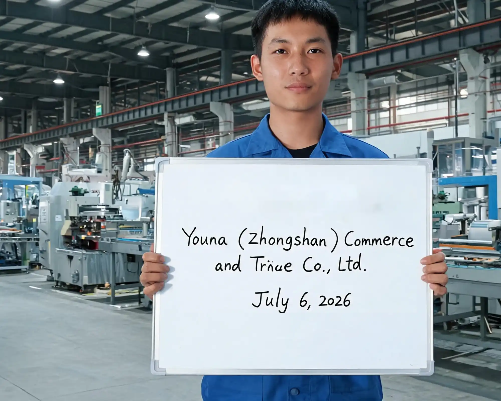
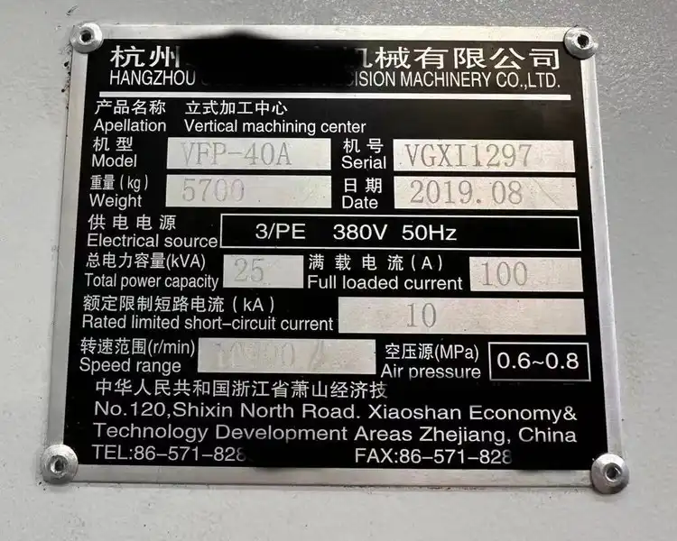
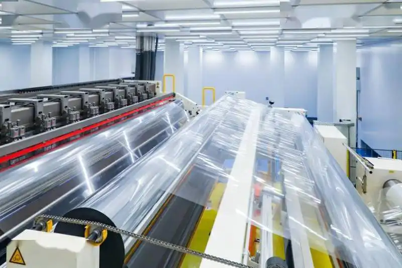

Last week in Zhongshan I walked onto a supplier's floor to verify a Chinese factory for a client — and the business license the sales rep handed me told the whole story. The scope line read "销售" (sales), not "生产" (production). That "factory" was a trading company wearing a factory's clothes.
That knot in your stomach isn't paranoia. You found a supplier with sharp photos and a quote 30% below your local option. Now you're one wire transfer away from discovering whether they actually make the product — or just resell someone else's.
So here's the deal: after 11 years of running supplier checks across Guangdong, I'll give you the same 8-step factory audit checklist I use on the ground. You can run most of it in 30 minutes from your laptop. Do it right and you'll filter out roughly 80% of fake or weak factories without paying $500 for a third-party audit.
Verifying manufacturers in China comes down to evidence, not promises. We'll work through the checklist in order: license check, facility verification, production-line inspection, QC audit, reference checks, sample evaluation, contract clauses, and the trial order that ties it all together.
8-Step Audit Checklist — At a Glance
| Step | What You Check | Pass Signal | Fail Signal |
|---|---|---|---|
| 1 | Business license on gsxt.gov.cn | Scope says 生产/production; capital 100万+ RMB | Scope says 销售/sales; QR won't scan |
| 2 | Facility photos & Google Maps | Satellite shows factory roof + docks; time-stamped photos match | Residential building; only catalog shots |
| 3 | Production line | Nameplates show real brands; WIP present | Empty floor; no machine brands |
| 4 | QC process | Dedicated QC + testing gear; defect rate <2% | Visual-only; no records |
| 5 | Reference clients | 2–3 real buyers you can call | "Can't share — NDA" |
| 6 | Sample | Production-line unit; ships from factory city | Showroom-only; wrong origin |
| 7 | Contract | Late-penalty, IP, CIETAC clause | No penalties; personal account |
| 8 | Trial order | 10–20% of volume; matches spec | Defects, delays, excuses |
If you'd rather have someone on the ground run steps 1–3 for you this week, our on-site factory audit covers the license pull, the satellite cross-check, and a live production-line walkthrough.
01 Step 1 — Business License Check: How to Verify a Chinese Factory's Legal Status
To verify a Chinese factory, the business license is the fastest lie-detector you have. Most platform "manufacturers" fold under a 5-minute china factory audit of this document. Start here every time.
If you're still deciding whether to hire an agent, go it alone, or lean on a marketplace, our sourcing agent vs Alibaba vs DIY comparison walks through the real trade-offs before you commit.
What fields to read on a Chinese business license
The license carries an 18-digit Unified Social Credit Code that uniquely identifies the company. Read these five fields before anything else:
- Company name (名称) — confirm it matches the name on the contract and the bank account.
- Legal representative (法定代表人) — the person legally liable.
- Registered capital (注册资本) — real manufacturers usually show 1,000,000 RMB or more; trading companies often sit below 500,000 RMB.
- Establishment date (成立日期) — a factory claiming 15 years of experience but incorporated 8 months ago is lying.
- Business scope (经营范围) — the line that exposes everything (see below).
Don't accept a screenshot alone. Ask for the PDF or a photo of the physical original, with the red official chop visible.
How to verify it on gsxt.gov.cn (with the QR code trick)
The National Enterprise Credit Information Publicity System (gsxt.gov.cn) is the government registry. Type the 18-digit code or the company name into the search box. You're looking for three things:
- The status reads "存续" (operating / active).
- There are no "经营异常" (abnormal operation) records — that flag appears when a company misses filings or can't be located.
- There are no "严重违法" (major violation) records.
The QR code trick: every license prints a QR code in the bottom-right corner. Scan it with your phone. It should resolve straight to that company's gsxt.gov.cn record. If the QR points to a different site, won't scan, or shows a mismatched name — stop. I've caught three suppliers this way who photoshopped the license body but forgot the QR still linked to the real (different) entity.
Trading company vs manufacturer — the scope line that gives it away
That one line — 经营范围 (business scope) — is the most useful thing on the document. It lists what the company is legally allowed to do. If you haven't yet settled whether a factory or a trading company fits your order, read our trading company or manufacturer guide first — it tells you which type to audit before you run this checklist.
- If it reads "生产 / 制造" (production / manufacturing) of your product category, it's likely a real manufacturer.
- If it reads only "销售 / 批发 / 进出口" (sales / wholesale / import-export), it's a trading company.
The Zhongshan supplier from my opening story? Their scope listed "批发、零售" (wholesale, retail) across six product categories. No production permission anywhere. They were sourcing from a real factory 40 km away and marking it up — which is fine to know, but not what their "factory direct" pitch claimed.
02 Step 2 — Facility Photos & Google Maps Reality Check
A trading company can borrow a showroom for an afternoon. It cannot borrow an industrial roofline.
Why catalog photos mean nothing
Catalog images are staged and sometimes lifted from unrelated suppliers. I've seen the identical "our factory" photo on 11 different Alibaba stores.
What you want is proof the building exists and matches the claim.
Satellite view red flags (residential building = walk away)
Drop the supplier's address into Google Maps and switch to satellite view. A real factory shows:
- A large rectangular roof with skylights or ventilation stacks.
- Loading docks and parked trucks.
- An industrial-zone setting, not an apartment block.
A residential building, an empty plot, or a shared office park means walk away. One client's "200-worker garment factory" turned out to be a 3-story walk-up above a noodle shop.
Demand time-stamped photos (today's date + your name)
Send this exact request: "Write today's date and our company name on a whiteboard, hold it in front of the production area, and send me the photo."
Two checks from one image:
- The date and your name prove it's current and specific to you (not a recycled shot).
- The roofline and machinery behind the whiteboard should match the satellite view from Step 2.

A time-stamped whiteboard in the production area — the single photo that proves the facility is real, current, and specific to your order.
If they push back with "our clients don't usually ask for this," that's your answer. Real factories do this daily for buyer audits.
03 Step 3 — Production Line Inspection (What to Actually Look At)
Step 3 is where the rubber meets the road. On the production line, claims meet reality. If you can't visit, request a live video walkthrough — a real-time call where you direct the camera, not a pre-recorded tour.
Machine nameplates — brand, year, capacity
Walk the line and read the nameplates bolted to each machine. A nameplate shows the brand, the manufacturing year, and the rated capacity. Those three numbers tell you what the supplier actually owns.
I once inspected a "precision parts factory" in Foshan where the flagship CNC machine's nameplate read a no-name brand dated 2003. Their quote claimed capacity of 5,000 units a month. That single 20-year-old machine, running one shift, physically cannot produce that volume.
Known brands (Haas, Brother, Haitian, BYD-era injection lines) with 2015+ dates signal real capital invested. Blank or generic nameplates signal caution.
Cross-checking claimed capacity vs what you see
Do the math yourself. Count the machines, count the visible operators, and estimate daily output.
On a recent furniture factory tour in Guangdong, I counted 4 CNC routers and 6 assembly benches. The supplier claimed 8,000 chairs a month. At realistic cycle times, 4 routers produce closer to 3,000. The overclaim wasn't malicious — they were quoting "partner capacity" they didn't control.
WIP (work-in-progress) as a honesty indicator
A real production floor at 2 p.m. on a Tuesday has WIP everywhere: half-assembled units, material queues, in-process stacks waiting for the next station.
An empty floor is the loudest red flag. No WIP means no real production is happening — and possibly never did. Ask to see the current production schedule and the WIP log. A factory that can't show you what's on the line today isn't a factory you're buying from.

A machine nameplate tells you the brand, year, and rated capacity — three numbers that expose an overclaimed quote instantly.
04 Step 4 — QC Process Audit
Good factories catch their own defects. Weak ones ship them to you and call it "standard variance." This step checks whether quality control is a department or an afterthought.
Is there a dedicated QC department
Ask to meet the QC lead. A real manufacturer has a named QC manager and a team, not one person eyeballing boxes at the door. Get the headcount. A factory with 80 workers and zero dedicated QC inspectors is betting your order on luck.
Ask whether they hold ISO 9001 certification — it signals a documented quality system, not just good intentions.
Testing equipment vs visual-only inspection
Look at what they inspect with. Visual-only checking catches color and scratches. It misses tensile strength, dimensional tolerance, electrical safety, and UV resistance.
A serious factory owns calipers, gauges, tensile testers, or aging chambers matched to your product. Our QC inspection checklist lists the exact equipment to look for by category, so you know what "real testing" means for your item before you ask.
AQL sampling and defect-rate benchmarks (<2% = good)
Ask which AQL (Acceptance Quality Limit) level they sample to. AQL 2.5 is the common commercial standard. Then ask for their defect-rate records from the last 10 batches.
Benchmark: a well-run factory holds a defect rate below 2% and can show you the tracking log to prove it. If they say "we have no defects" with no records, that's worse than admitting 1.8% — it means they aren't measuring.
If you can't be on site yourself, our quality control services in China send a certified inspector to run AQL sampling and photograph the results before your goods move.
05 Step 5 — Reference Clients (Don't Just Take Their Word)
Suppliers hand you a list of glowing "partners" the way everyone hands you a five-star reference — it's curated. Your job is to make it real.
Ask for 2–3 real buyer contacts — and actually call them
Request two or three buyer references from your region or industry — not anonymous "big brands in Europe." Then actually call them. Email is easy to fake; a 10-minute phone call is not.
A legitimate manufacturer will give you contacts without drama. If the answer is "we can't share due to NDA," ask for a reference letter with a verifiable signatory instead. Total refusal on a real reference is a yellow flag.
Verify references on LinkedIn
Before you call, find the reference person on LinkedIn. Confirm they actually work at the buyer company. I've caught two fake references this way — the "procurement manager" was a stock-photo profile with 11 connections.
What questions to ask references
The four that matter:
- Did they hit the quoted lead time on your last three orders?
- What was your actual defect rate, and how did they handle a bad batch?
- Did pricing hold after the first order, or creep up?
- Would you reorder today? Listen for the pause before the answer.
06 Step 6 — Sample Evaluation (Beyond the Golden Sample)
Every supplier sends a perfect "golden sample." That unit was hand-picked, maybe hand-finished, by the boss. It proves they can make one good piece. It proves nothing about your 5,000-unit run.
Request a production-line sample, not a showroom sample
Ask for a random unit pulled off the live line, not from the display shelf. Phrase it plainly: "Send me any unit from this morning's production, sealed in its normal packaging."
The production-line sample shows you real-world consistency — the seams, the tolerances, the things the golden sample was buffed to hide.
Track the shipping origin
When the sample arrives, check the parcel's origin city on the courier label and the customs declaration. A supplier claiming a Guangzhou factory but shipping samples from Yiwu is almost certainly a trading company pulling from a market.
Match the ship-from city to the factory address from Step 2. A mismatch deserves a direct question, not a shrug.
Request a small custom modification (tests real manufacturing ability)
This is my favorite trap for trading companies. Ask them to change one small spec — a logo placement, a Pantone color, a 5 mm dimension change.
A real factory adjusts the file or the mold and ships the variant. A trading company stalls: "that needs management approval," "minimum is 10,000 units," or "we'll get back to you" and never does.
07 Step 7 — Contract Review (The Clauses That Save You)
A cheap supplier with a weak contract will cost you more than an expensive supplier with a strong one. These four clauses are the difference between recourse and regret.
Quality standard reference
The contract must reference a specific, measurable standard — your spec sheet, a material grade, an accepted AQL level. The phrase "high quality" is unenforceable; a buyer and seller never agree on what it means after a dispute starts.
Write the tolerance numbers in. "Anodized aluminum, 2.0 mm ±0.1, per attached drawing v3" beats "premium aluminum" every time.
Late-delivery penalty clause
Production slips are the norm, not the exception. Build in liquidated damages: e.g., 0.5% of order value per day late, capped at 10–15%. This converts "sorry, the material was delayed" into a number you can deduct from the balance.
IP / tooling ownership clause
If you pay for molds, tools, or custom tooling, the clause must state they are your property and cannot be used for other buyers. Without it, a factory can run your exclusive design for a competitor the month after you launch.
Dispute resolution (CIETAC vs your home court)
Specify arbitration forum up front. For China contracts, CIETAC (China International Economic and Trade Arbitration Commission) is the practical, enforceable choice — a foreign court judgment is slow and hard to execute inside China. Name CIETAC, the city (usually the supplier's city), and the language of arbitration in the contract. Read the rules at the CIETAC official site before you sign.
Payment safety, non-negotiable: wire 30% deposit + 70% before shipment, to the company's corporate bank account — never a personal account, never 100% upfront. A supplier demanding full prepayment is flashing a red flag the size of their roof.
08 Step 8 — Trial Order (The Final Reality Test)
Step 8 is the one that takes away all the doubt. An audit checks a snapshot; a trial order checks the relationship under load — it turns "they seem legit" into "I know they're legit."
Why a small first order beats any audit
A client in Mexico wired a $3,800 trial order for 200 rolls of PPF before committing to a $40,000 annual contract. The trial cost him pocket change and taught him everything: the factory slipped the lead time by 3 days, and the core tube packaging didn't match the spec sheet. Both were cheap lessons at $3,800. At $40,000 they'd have been expensive surprises.
The trial order is the only step that tests communication, quality, packing, and honesty all at once.
Sizing the trial order (10–20% of target volume)
Size it at 10–20% of your target monthly volume — large enough to stress the line, small enough to absorb a loss if it fails. For a 1,000-unit monthly plan, order 100–200.
When the trial order lands, our team can inspect the trial order at the port or warehouse and photo-document every unit against spec.
What to inspect when the trial order arrives
- Count every unit against the packing list.
- Measure and test against your referenced standard — dimensions, weight, function.
- Check packaging for the defects the Mexico client caught.
- Photo-document the opening so any dispute starts with evidence, not memory.
Prefer independent eyes on the trial shipment? Third-party inspectors charge $200–$800 per audit — SGS runs $300–$500, Bureau Veritas $250–$400, and local inspectors $150–$250. They report straight to you, with photos, before the container leaves.
A clean trial order is your green light for the full volume.

A $3,800 trial order on the inspection table — small enough to absorb, detailed enough to expose a supplier before the $40,000 commit.
09 The Honest Part: What Verification Can't Guarantee
I'll tell you the part most sourcing agencies won't: verification cuts your risk, it doesn't delete it. Even a factory that passes all 8 steps can slip.
Raw material prices spike and they substitute a cheaper grade. A key operator quits and quality dips for a month. I've seen a clean, CIETAC-contracted, sub-2%-defect factory still ship a bad batch on order #14.
So treat chinese factory verification as the start of monitoring, not a one-time pass. Keep doing pre-shipment inspection on every order, not just the first. Our ongoing quality control and full sourcing service build that ongoing check into every shipment — because the goal isn't a perfect supplier, it's a supplier you can actually manage.
10 8-Step Audit Checklist (Downloadable Summary)
Print this china factory inspection checklist and run it before every new supplier. Tick each box — a single fail in steps 1–3 is reason to pause. This chinese factory audit checklist is print-ready for your sourcing file.
- Step 1 — License: 18-digit code verified on gsxt.gov.cn; QR scans to the same record; scope shows 生产/production; capital 100万+ RMB.
- Step 2 — Facility: satellite shows factory roof + docks; time-stamped photo matches the address.
- Step 3 — Production line: real machine nameplates (brand + year); WIP present; capacity math checks out.
- Step 4 — QC: dedicated QC team; testing equipment (not visual-only); defect rate <2% with records.
- Step 5 — References: 2–3 real buyers called; LinkedIn-verified; lead time and defect questions answered.
- Step 6 — Sample: random production-line unit; ships from factory city; passes a small custom-change test.
- Step 7 — Contract: measurable quality standard; late-penalty clause; IP/tooling clause; CIETAC forum; 30/70 corporate-account payment.
- Step 8 — Trial order: 10–20% of volume placed; counted, measured, and photo-documented on arrival.
A clean sheet doesn't mean risk-free. It means you've removed the 80% of suppliers who would have taken your deposit and disappeared.
11 Conclusion
You now know how to audit a Chinese factory with the same 8-step checklist I run on the ground in Guangdong — from the 5-minute license pull to the trial order that proves the relationship. Work the list before you wire a deposit and you'll filter out the trading companies, the empty floors, and the photoshopped "factories" that populate most B2B platforms.
The pattern is simple. First you verify the paper — the license and the facility (Steps 1–2). Then you verify the floor — the production line and the QC process (Steps 3–4). Next you verify the track record through references and a real sample (Steps 5–6), lock the terms in the contract (Step 7), and finally prove it all with a small trial order (Step 8). None of it requires a paid third-party audit to start — and the steps that do cost money cost a fraction of a bad shipment.
Before you import, read our complete guide to importing from China — it picks up exactly where this checklist ends.
When you're ready to put a supplier through the full loop, our team can run the full on-site audit and handle the sourcing service end to end — license check, live walkthrough, trial-order inspection, and the contract clauses that protect you. Reach out before you send the deposit, and we'll tell you within a week whether your supplier is a factory or a front desk.
Find Us on Social Media
Follow Karsa for sourcing tips, product updates, and factory insights from China.